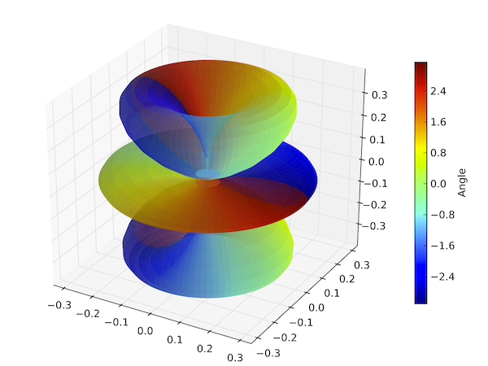
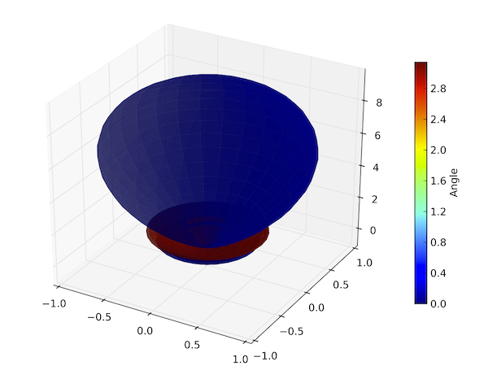

Plotting an angular wave function and direction eigen-ket¶
Adapted from the quantum optics toolbox by Sze M. Tan
Shows a plot of an angular wave function corresponding to specified state of a l=3 system, and then computes an approximation to a direction eigenket in the direct sum space of angular-momentum spaces.
from qutip import *
from pylab import *
#
# plot angular wave function for l=3
#
phi=linspace(0,2*pi,90)
theta=linspace(0,pi,45)
c2=basis(7,4) #2l+1
figure(figsize=[6,4])
y=orbital(theta,phi,c2)
sphereplot(theta,phi,y)
#
# approximation to a direction eigenket
#
L=2
theta = linspace(0, pi, 180)
phi = linspace(0, 2*pi, 30)
lmax = 10
psi_list = []
for l in range(0,lmax+1):
psi_list.append(sqrt((2*l + 1)/(4*pi)) * basis(2*l + 1, l))
psi = orbital(theta, phi, psi_list)
sphereplot(theta, phi, psi)

